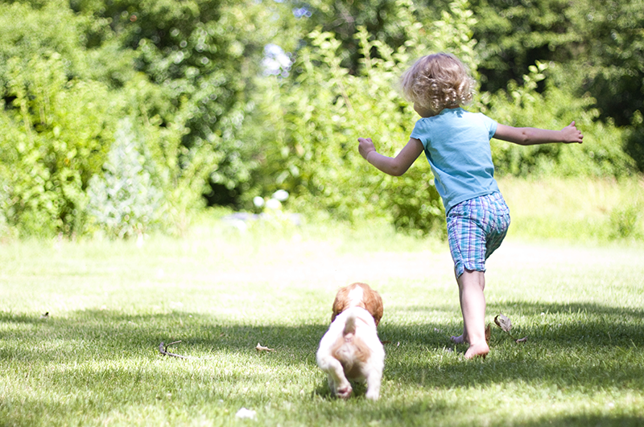

- 
En residencial Campestre El Álamo nos preocupamos por brindarte áreas verdes para que tu y tu familia puedan disfrutar y realizar sus actividades favoritas al aire libre, estas áreas fueron pensadas exclusivamente para incentivar a una buena convivencia familiar.